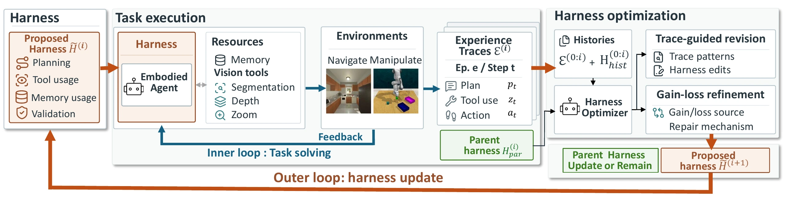
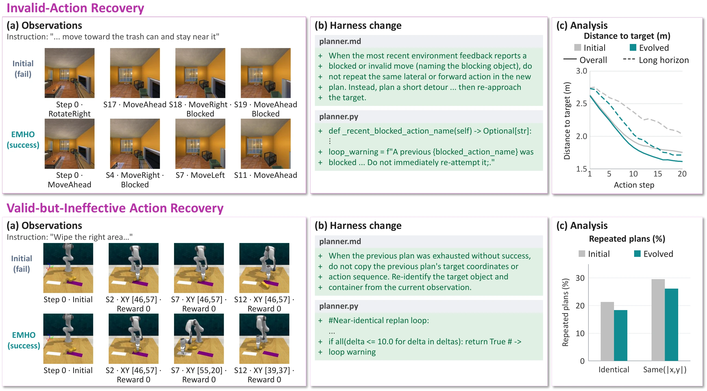
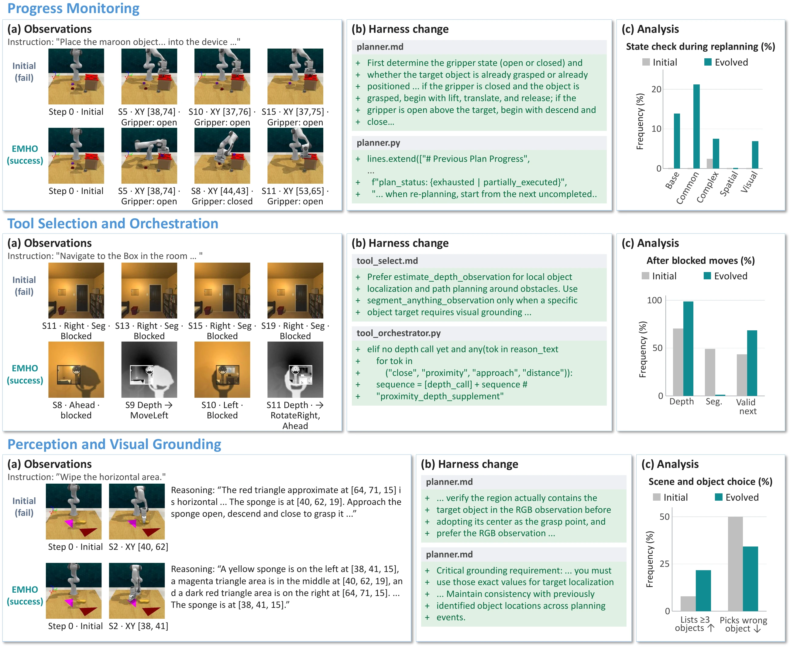

EMHO
EMbodied Agent Harness Optimization
via Experience Traces
1 Korea University2 University of Arkansas – Fayetteville3 University of Wisconsin–Madison

Abstract
Improving embodied agents often focuses on optimizing the underlying model through training, while the surrounding agent harness that controls planning, context, and tool use is typically engineered. We ask whether this harness can instead improve itself directly from experience traces under sparse environmental feedback. We propose EMbodied Agent Harness Optimization (EMHO), a self-evolving framework that keeps the embodied model frozen and iteratively revises its harness by analyzing execution trajectories and prior harness history. EMHO optimizes beyond skills or recovery prompts, modifying how the agent monitors progress, uses vision tools, grounds observations, and responds to failures. To support multiple subtasks with a single harness, we introduce EMHO-Merge, which addresses trade-offs in jointly optimizing a single shared harness across subtasks by using episode-level gains and losses to guide evidence-supported refinement of when and how revised behaviors are applied. We evaluate EMHO on EmbodiedBench across navigation and manipulation tasks, and EMHO consistently improves task success for both Qwen 9B and 27B models. Qualitative analysis shows that EMHO goes beyond recovering from failures and unproductive actions to reshape how the embodied agent interprets and interacts with its environment.
Results
Success rates (%) on EmbodiedBench. EMHO entries report the best score attained on each split over optimization iterations. Search and held-out maxima may occur at different iterations. Bold entries follow the main table in the paper.
| Method / Model | Avg | Base | Common | Complex | Visual | Long |
|---|---|---|---|---|---|---|
| GPT-5 | 56.8 | 62.0 | 62.0 | 68.0 | 50.0 | 42.0 |
| Claude-4.6-Sonnet | 62.2 | 68.0 | 63.0 | 77.0 | 55.0 | 48.0 |
| Gemini-2.0-flash | 48.7 | 63.3 | 65.0 | 50.0 | 51.7 | 13.3 |
| InternVL3-78B | 53.7 | 66.7 | 63.3 | 61.7 | 45.0 | 31.7 |
| gemma-3-27b-it | 45.3 | 53.3 | 45.0 | 61.7 | 50.0 | 16.7 |
| One-Shot Harness w/ Opus (Qwen3.5-9B) | 53.3 | 56.7 | 60.0 | 63.3 | 36.7 | 50.0 |
| One-Shot Harness w/ Sol (Qwen3.5-9B) | 49.3 | 50.0 | 53.3 | 63.3 | 40.0 | 40.0 |
| One-Shot Harness w/ Opus (Qwen3.8-27B) | 67.7 | 78.3 | 70.0 | 75.0 | 58.3 | 56.7 |
| One-Shot Harness w/ Sol (Qwen3.8-27B) | 65.7 | 73.3 | 70.0 | 61.7 | 63.3 | 60.0 |
| Initial Harness (Search, Qwen3.5-9B) | 50.0 | 58.3 | 46.7 | 65.0 | 40.0 | 40.0 |
| Initial Harness (Held-out, Qwen3.5-9B) | 48.7 | 58.3 | 53.3 | 58.3 | 33.3 | 40.0 |
| EMHO (Search, Qwen3.5-9B) | 63.0 | 71.7 | 70.0 | 70.0 | 50.0 | 53.3 |
| EMHO (Held-out, Qwen3.5-9B) | 56.7 | 66.7 | 60.0 | 65.0 | 40.0 | 51.7 |
| Initial Harness (Search, Qwen3.8-27B) | 54.7 | 60.0 | 60.0 | 50.0 | 50.0 | 53.3 |
| Initial Harness (Held-out, Qwen3.8-27B) | 66.0 | 73.3 | 63.3 | 66.7 | 66.7 | 60.0 |
| EMHO (Search, Qwen3.8-27B) | 67.3 | 76.7 | 76.7 | 63.3 | 63.3 | 56.7 |
| EMHO (Held-out, Qwen3.8-27B) | 75.3 | 86.7 | 76.7 | 73.3 | 76.7 | 63.3 |
| Method / Model | Avg | Base | Common | Complex | Visual | Spatial |
|---|---|---|---|---|---|---|
| GPT-5 | 26.8 | 21.0 | 25.0 | 31.0 | 22.0 | 35.0 |
| Claude-4.6-Sonnet | 37.6 | 40.0 | 35.0 | 40.0 | 36.0 | 37.0 |
| Gemini-2.0-flash | 16.5 | 14.6 | 8.3 | 14.6 | 13.9 | 31.3 |
| InternVL3-78B | 26.3 | 29.2 | 22.9 | 22.9 | 25.0 | 31.3 |
| gemma-3-27b-it | 17.5 | 25.0 | 16.7 | 16.7 | 8.3 | 20.8 |
| One-Shot Harness w/ Opus (Qwen3.5-9B) | 13.2 | 10.4 | 16.7 | 12.5 | 13.9 | 12.5 |
| One-Shot Harness w/ Sol (Qwen3.5-9B) | 11.8 | 12.5 | 6.3 | 10.4 | 11.1 | 18.8 |
| One-Shot Harness w/ Opus (Qwen3.8-27B) | 27.8 | 22.9 | 20.8 | 29.2 | 38.9 | 27.1 |
| One-Shot Harness w/ Sol (Qwen3.8-27B) | 25.3 | 25.0 | 25.0 | 27.1 | 22.2 | 27.1 |
| Initial Harness (Search, Qwen3.5-9B) | 9.7 | 8.3 | 8.3 | 6.3 | 11.1 | 14.6 |
| Initial Harness (Held-out, Qwen3.5-9B) | 10.7 | 6.3 | 4.2 | 8.3 | 22.2 | 12.5 |
| EMHO (Search, Qwen3.5-9B) | 18.3 | 14.6 | 12.5 | 16.7 | 25.0 | 22.9 |
| EMHO (Held-out, Qwen3.5-9B) | 21.0 | 14.6 | 20.8 | 18.8 | 36.1 | 14.6 |
| Initial Harness (Search, Qwen3.8-27B) | 23.9 | 16.7 | 12.5 | 29.2 | 44.4 | 16.7 |
| Initial Harness (Held-out, Qwen3.8-27B) | 26.4 | 25.0 | 25.0 | 29.2 | 27.8 | 25.0 |
| EMHO (Search, Qwen3.8-27B) | 44.2 | 50.0 | 41.7 | 37.5 | 50.0 | 41.7 |
| EMHO (Held-out, Qwen3.8-27B) | 39.4 | 41.7 | 41.7 | 33.3 | 38.9 | 41.7 |
Qualitative Analysis
Recovery Edits
EMHO improves how the agent responds to invalid actions and recognizes valid actions that fail to make progress.

Non-Recovery Edits
EMHO also changes progress monitoring, vision-tool orchestration, and visual grounding during ongoing interaction.
